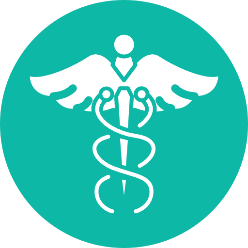
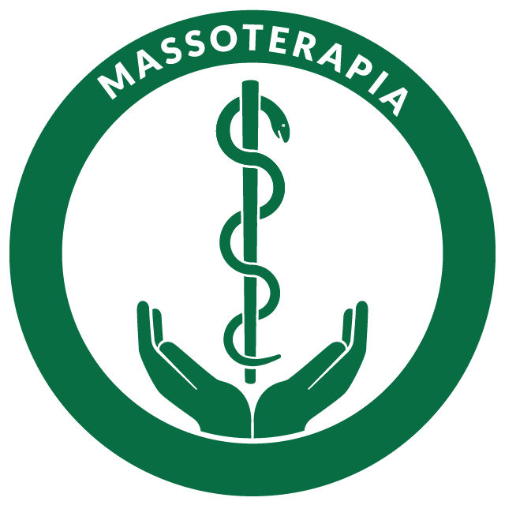

SERVIÇOS
SAÚDE

Psicologia
Atendimento psicológico individual para adultos, crianças e famílias.
Fonaudiologia
Suporte especializado para linguagem, comunicação e audição.


Pedagogia
Reflexões e orientações educacionais para fortalecer o aprendizado.


Massoterapia
Tratamentos relaxantes e terapêuticos com foco no bem-estar físico e mental.